Обучающиеся Центров цифрового образования детей «IT-куб» в возрасте 14-18 лет
Центры цифрового образования
В Хакатоне могут принять участие:
Состав команды — от 2 до 4 человек*
*Один участник может быть зарегистрирован только в одной команде
*Один участник может быть зарегистрирован только в одной команде
Направления


Этапы проведения
Заочный этап
15 сентября — 10 октября 2023 года
На базе субъектов Российской Федерации среди обучающихся Центров «IT-куб»
В целях определения команд, направляемых на очный этап Хакатона, субъекту Российской Федерации необходимо провести внутренний отбор, опираясь на представленные задания и критерии оценивания заданий, разработанные ПартнерамиПодготовительный этап
20 октября — 10 ноября 2023
Проведение серии подготовительных онлайн-сессий по каждому направлению с партнерами Хакатона
Очный этап
24 — 26 ноября 2023
Свердловская область, г. Верхняя Пышма, Успенский пр., 2Г
Работа команд над кейсами по расширенному заданию, полученному в первый день мероприятияДемонстрация итогов работы путем публичной защиты презентацииПобедители
Программирование
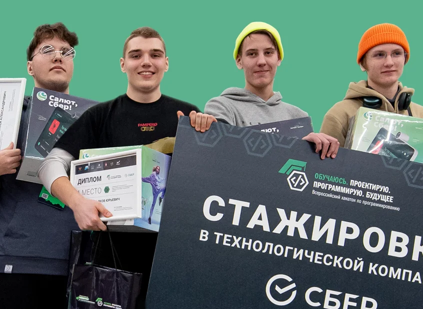
Гусев Георгий Андреевич,
Ефременков Алексей Александрович,
Мартыненков Яков Юрьевич,
Жуков Артём Геннадьевич
Ефременков Алексей Александрович,
Мартыненков Яков Юрьевич,
Жуков Артём Геннадьевич
Смоленская область

Юрков Владислав Юрьевич,
Литвиненко Даниил Александрович,
Бабкина Мария Игоревна
Литвиненко Даниил Александрович,
Бабкина Мария Игоревна
Алтайский край
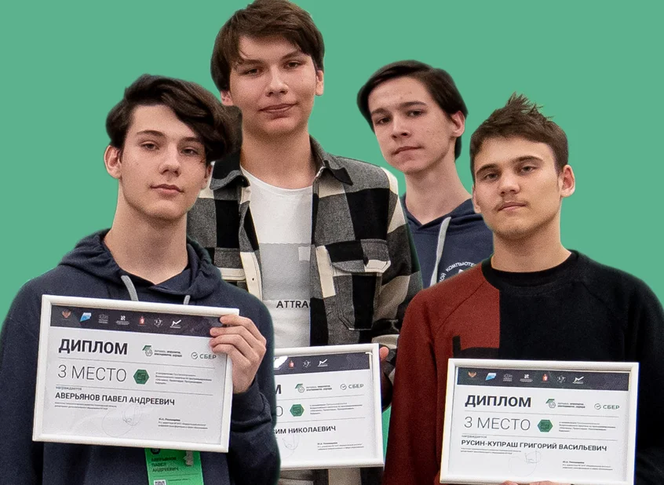
Аверьянов Павел Андреевич,
Бакурин Максим Николаевич,
Русин-Купраш Григорий Васильевич,
Чебунин Георгий Викторович
Бакурин Максим Николаевич,
Русин-Купраш Григорий Васильевич,
Чебунин Георгий Викторович
Ульяновская область
Диджитал (VR/AR технологии)
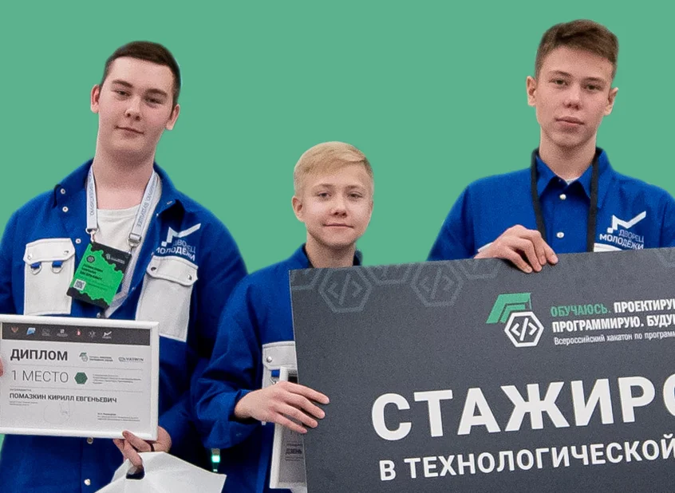
Газалтдинов Иван Равильевич,
Дзень Артем Сергеевич,
Помазкин Кирилл Евгеньевич
Дзень Артем Сергеевич,
Помазкин Кирилл Евгеньевич
Свердловская область
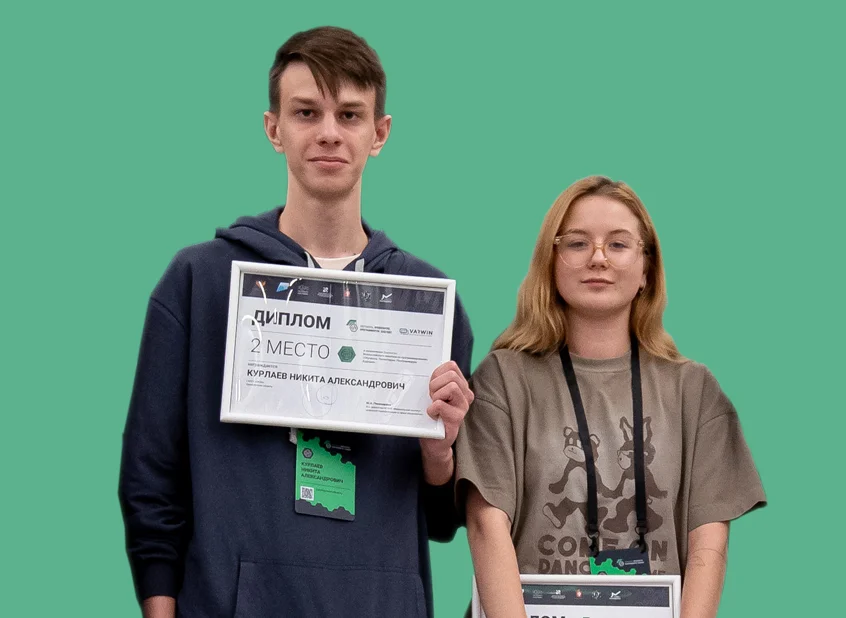
Курлаев Никита Александрович,
Ахтямова София Ильдаровна
Ахтямова София Ильдаровна
Оренбургская область
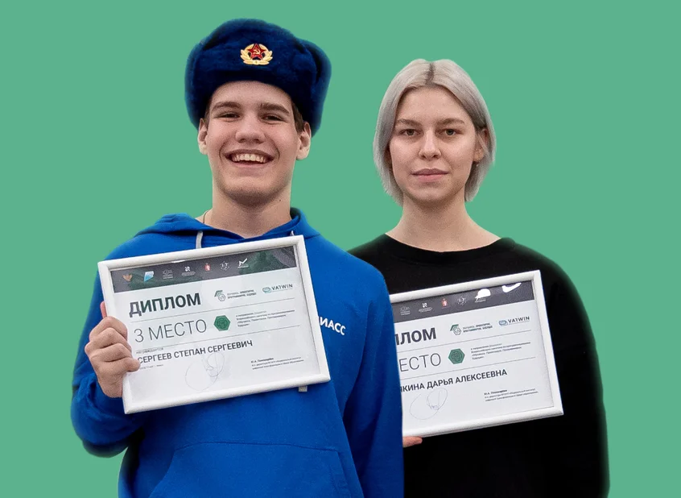
Сергеев Степан Сергеевич,
Кульбякина Дарья Алексеевна
Кульбякина Дарья Алексеевна
Челябинская область
Информационная безопасность
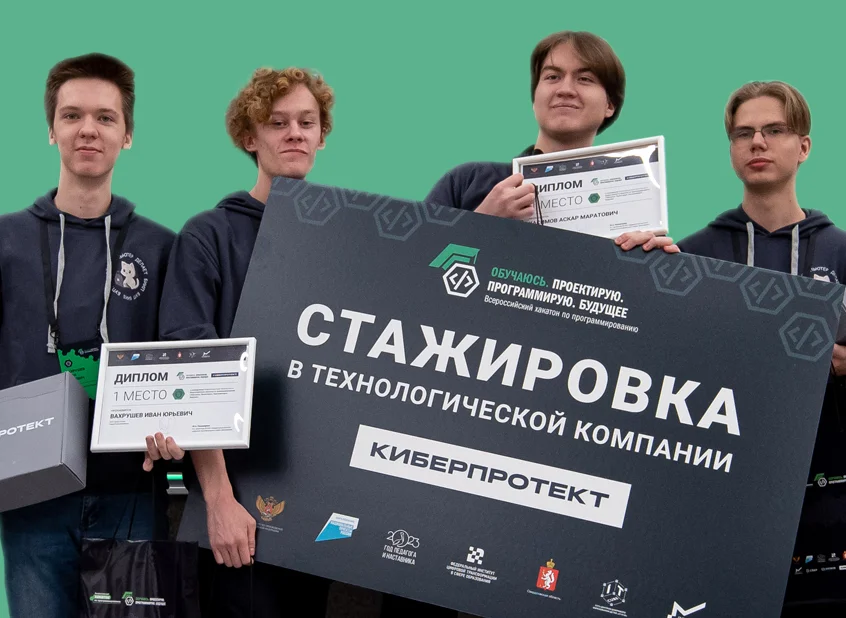
Касимов Аскар Маратович,
Митрошин Данил Дмитриевич,
Вахрушев Иван Юрьевич,
Ватлин Денис Витальевич
Митрошин Данил Дмитриевич,
Вахрушев Иван Юрьевич,
Ватлин Денис Витальевич
Удмуртская Республика
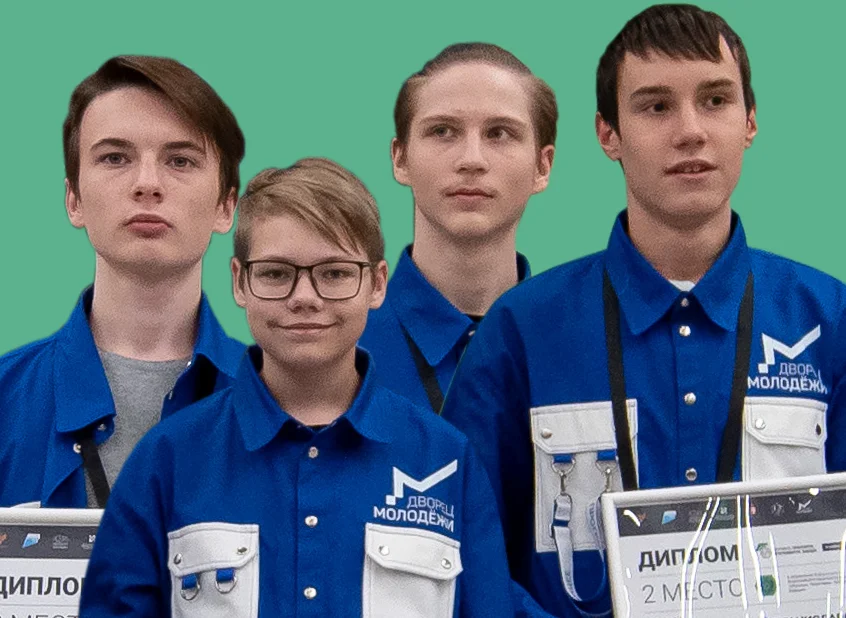
Цукров Михаил Евгеньевич,
Воронский Алексей Станиславович,
Лапидус Арсений Евгеньевич,
Карпов Дмитрий Павлович
Воронский Алексей Станиславович,
Лапидус Арсений Евгеньевич,
Карпов Дмитрий Павлович
Свердловская область
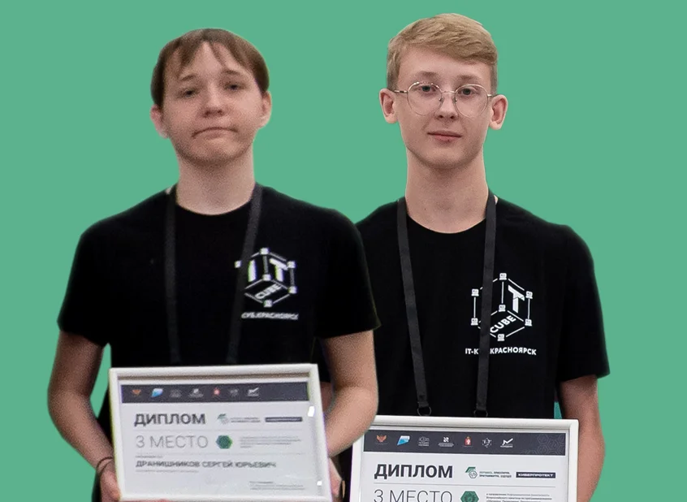
Дранишников Сергей Юрьевич,
Федотко Назар Вадимович
Федотко Назар Вадимович
Красноярский край
Фотогалерея
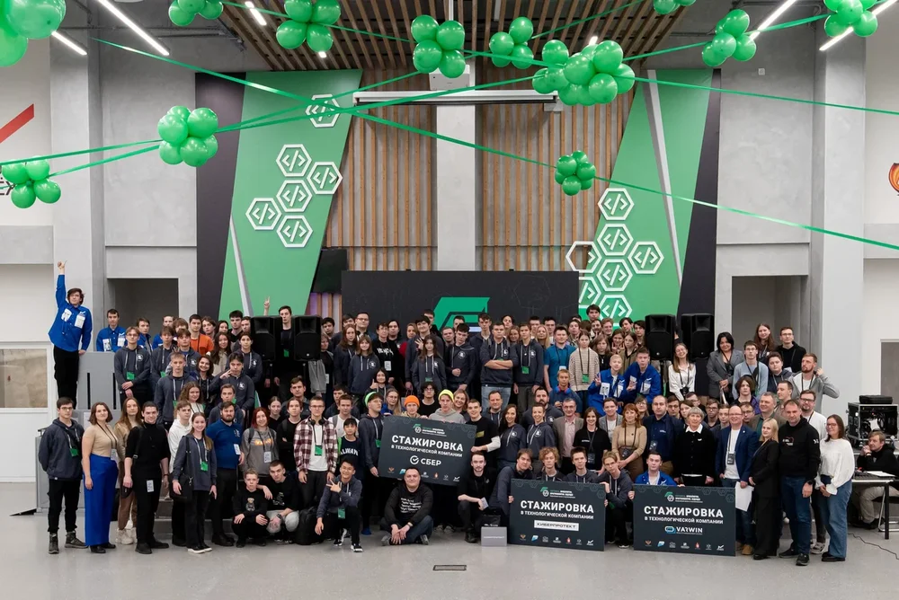
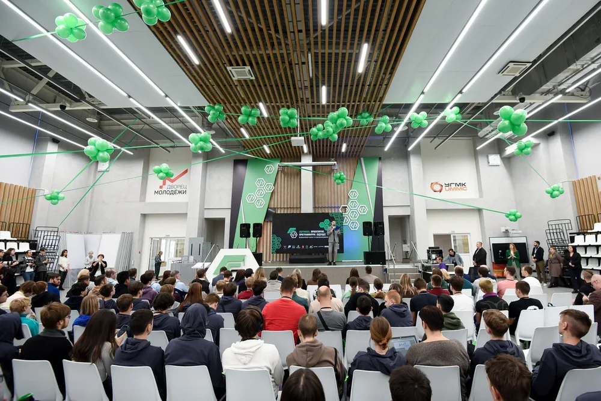
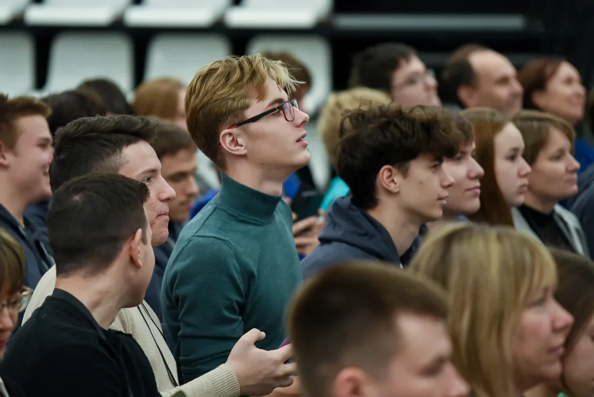
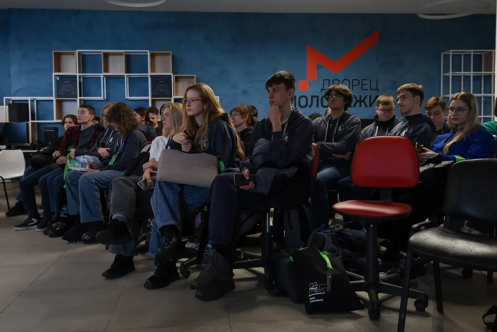
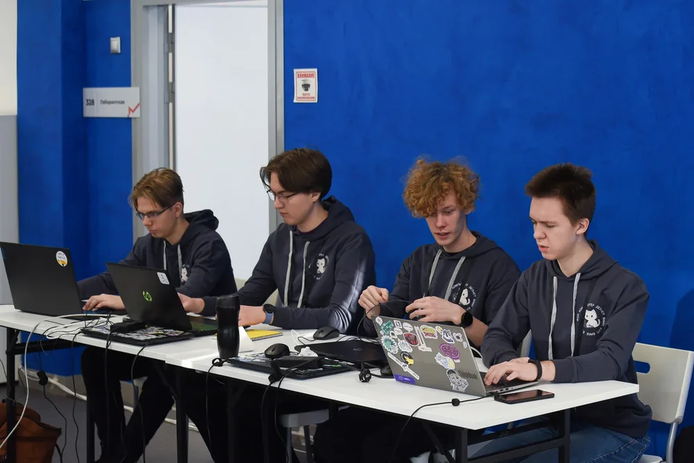
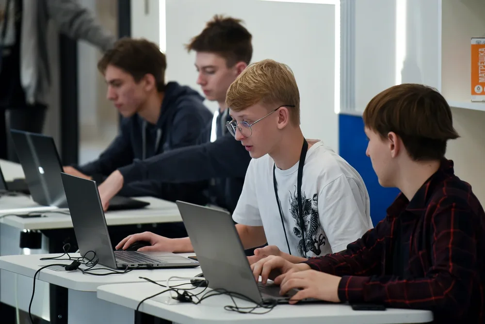